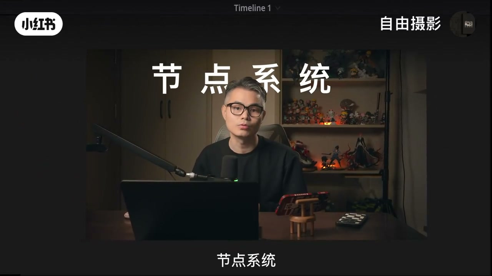
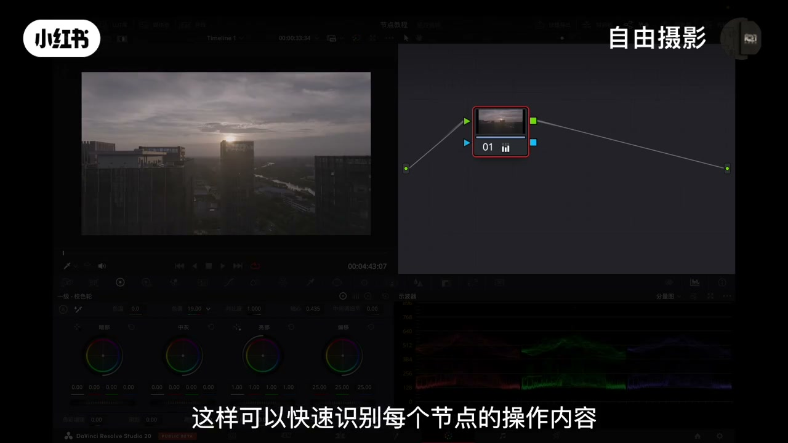
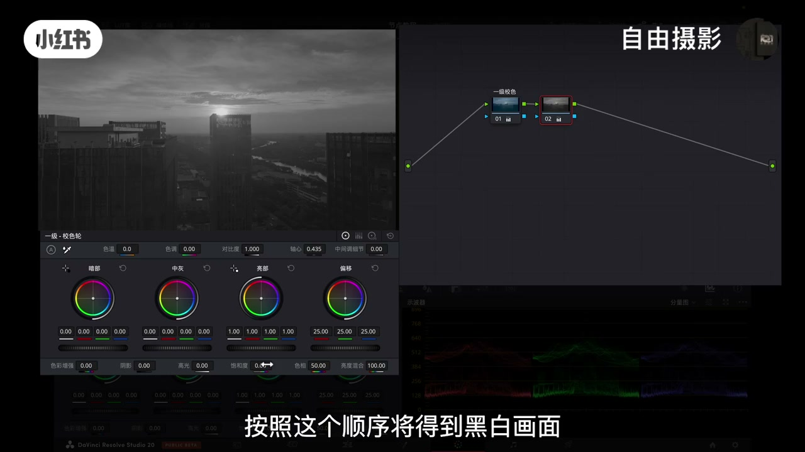
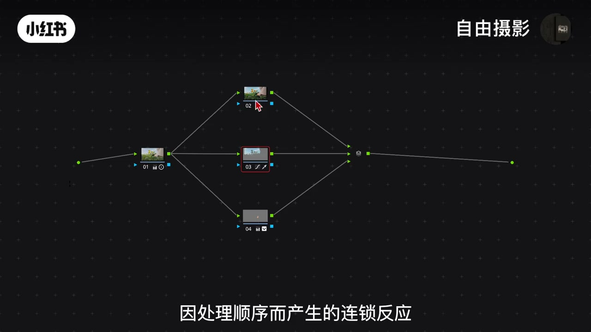
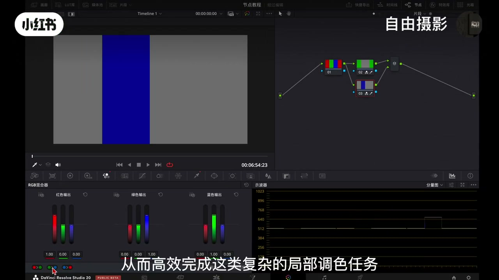
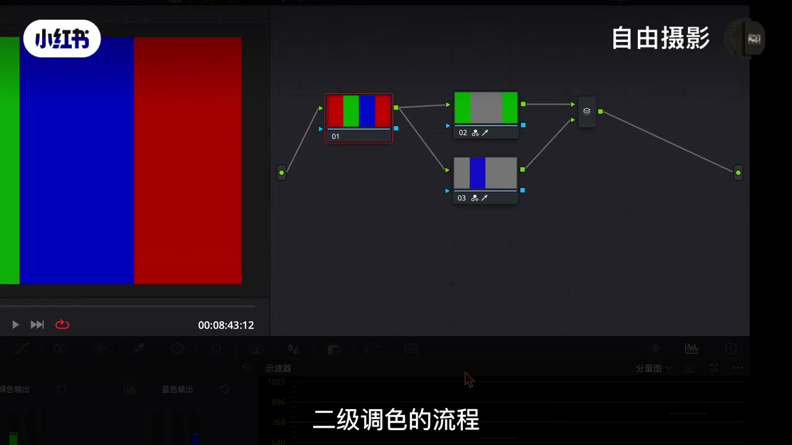
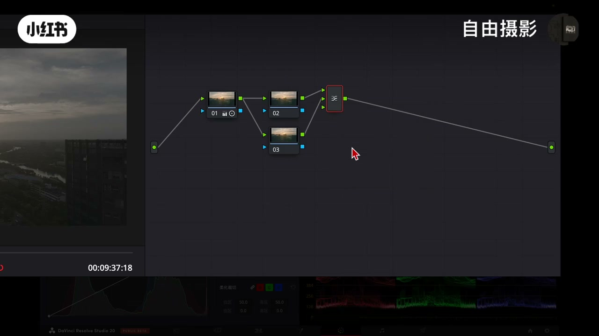
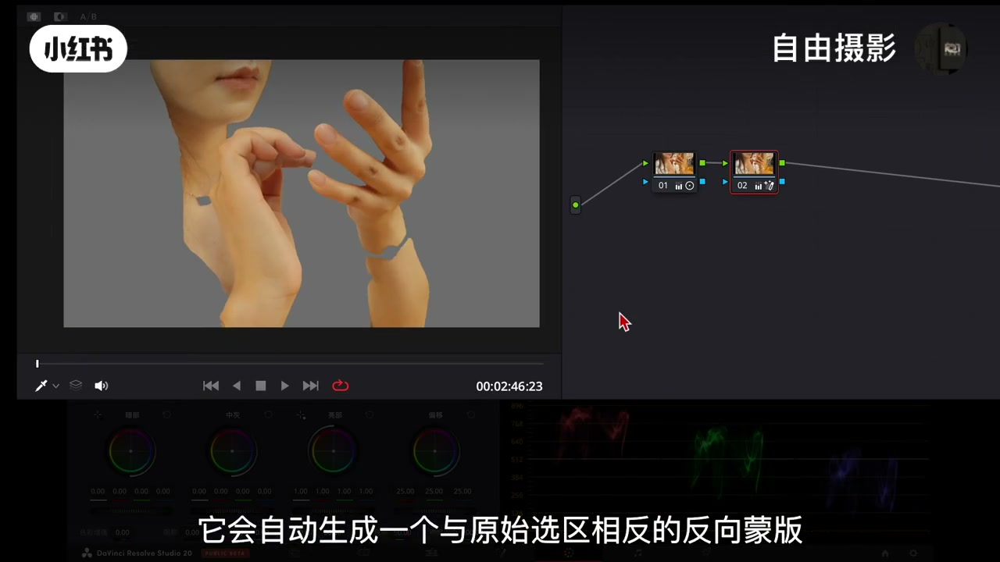
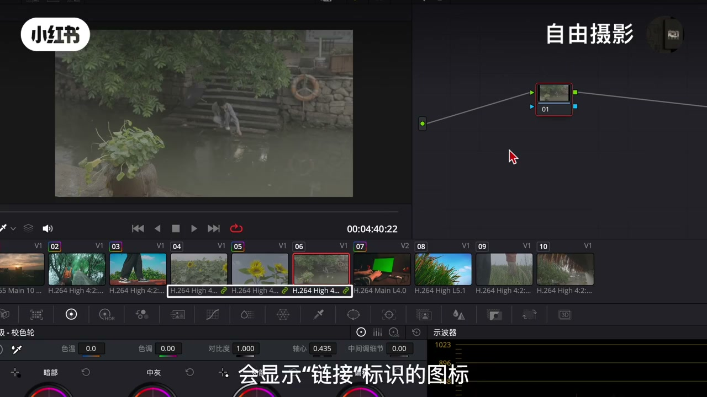
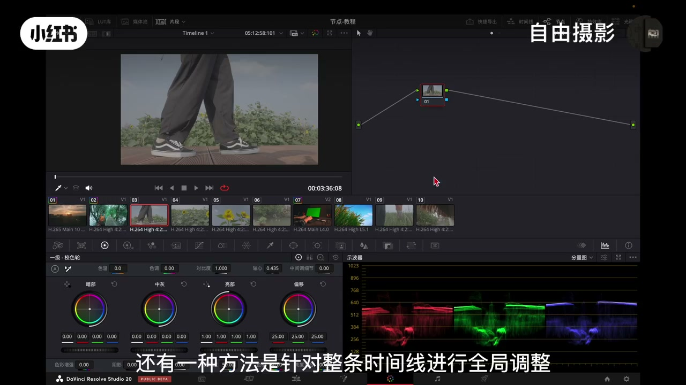

内容要点
一段 14 分 45 秒的达芬奇节点系统进阶课，把串行、并行、图层三类核心节点+特殊节点讲透：①基础结构：素材导入自动生成节点结构，信号左入点→中间校正节点→右出点；节点显示功能图标（曲线/一级平衡）快速识别，右键节点标签可加文字注释。②节点独立性：新建节点参数恢复默认，但前节点输出=后节点输入，顺序直接影响效果（蓝+去饱和=黑白，互换=蓝色画面）。③串行节点（Option+S）：线性流程①画面还原②白平衡影调③风格化。④并行节点（Option+P）：同源分流——所有调整直接基于原始画面，规避串行连锁反应；多色循环替换案例（红转绿绿转蓝蓝转红）串行难以完成；天空选区案例：返回调整体风格→选区失效，并行=二级调色操作基础。⑤图层节点（Option+L）：层级化结构下层覆盖上层（与PS相反，下方图层显示级别更高）；图层混合器选混合模式（颜色加深/浅色/绿色/叠加）+拖眩光噪点素材=特效合成。⑥外部节点：创建蒙版/抠像自动生成反向蒙版（抠出皮肤→选中皮肤以外）。⑦Alpha输出：吸管取色+创建Alpha输出=透明通道抠像；画笔逐帧蒙版+Alpha=无缝遮罩转场。⑧RGB分离器/结合器：拆分三通道独立精确调整，特定色彩问题/通道级降噪。⑨调色复制四法：鼠标中键复制节点参数/Shift+加号相邻复制/抓取静帧批量应用调色/群组模式统一调色+片段模式微调+时间线模式全局调整。⑩流程总结：先整体后局部——基础校正→并行分离天空→蒙版跟踪皮肤→串行加特效。
知识结构
非破坏性编辑逻辑，任意阶段回溯不破坏原素材。
左入点→校正节点→右出点；功能图标识别+文字注释。
前节点输出=后节点输入；顺序互换效果完全不同。
Option+S；还原→白平衡影调→风格化。
同源分流规避连锁反应；多色循环替换串行难完成。
线性流程污染选区；并行=二级调色基础，Option+P。
层级化下层覆盖上层；图层混合器特效合成。
外部节点反向蒙版；Alpha输出抠像+遮罩转场。
拆分三通道独立精确调整；通道级降噪。
中键复制/Shift+号相邻复制/静帧批量应用。
群组统一调色+片段微调；时间线模式全局调整。
先整体后局部：校正→并行分离→蒙版跟踪→串行特效。
达芬奇节点系统=三类核心节点+特殊节点。①串行节点（Option+S）=线性流程：画面还原→白平衡影调→风格化，基础调色；顺序影响效果（前节点输出=后节点输入，蓝+去饱和=黑白，互换=蓝）。②并行节点（Option+P）=同源分流：所有调整直接基于原始画面，规避串行连锁反应，多色循环替换/天空选区等二级调色任务必用（串行会因线性流程污染后续选区）。③图层节点（Option+L）=层级化结构：下层覆盖上层（与PS相反下方显示级别高），图层混合器选混合模式（颜色加深/浅色/绿色/叠加）+拖眩光噪点素材=特效合成。特殊节点：外部节点=自动反向蒙版（抠皮肤→选中其余保护肤色）；Alpha输出=吸管取色+创建Alpha=透明通道抠像、画笔逐帧蒙版=无缝遮罩转场；RGB分离器/结合器=拆分三通道独立调整。调色复制四法：鼠标中键复制/Shift+加号相邻/抓取静帧批量/群组+时间线模式。心法：先整体后局部——校正→并行分离→蒙版跟踪→串行特效。
00:00-02:50基础节点结构
非破坏性：「节点是达芬奇调色的基石，它采用非破坏性的编辑逻辑，可以让你在任意阶段回溯调整，而绝不会破坏原始素材。与图层思维不同，节点通过清晰的流程让复杂的项目的管理变得更加直观、可控。」
流向：「任何素材导入后都会生成基础的节点结构，信号的流向从左至右。最左侧的原点为入点，负责将图像数据传输至位于中间的校正节点，所有画面数据在这里完成调整后，最终传递至右侧的出点。」
功能图标：「当你使用任意调色工具后，节点上就会显示对应的功能图标，比如调整曲线工具就会显示曲线图标，一级平衡调整就会显示一级平衡图标，这样可以快速识别每个节点的操作内容。如果需要更清晰的识别，可以通过右键菜单选择节点标签，为他添加文字注释。」



02:50-05:00节点独立性+串行节点
独立性：「每个节点都具有独立性，这意味着当你新建节点时，工具参数将恢复默认状态。但由于节点间存在数据传递关系，前一个节点的输出会成为后一个节点的输入，因此节点排列顺序将直接影响最终效果。」
顺序实验：「在第一个节点将画面调整为蓝色，在第二个节点降低饱和度到零，按照这个顺序将得到黑白画面。如果两个节点的顺序互换，先降低饱和度到零再调为蓝色，最终得到的效果就是蓝色画面。虽然节点本身数据没有变，但顺序改变导致最终效果完全不同。」
串行节点：「可以通过右键菜单选择添加串行节点或使用快捷键Option加S创建新的串行节点。通常在调色时在第一个节点会进行画面还原，第二个节点修复白平衡和影调调整，后续的节点完成画面风格化处理。」


05:00-08:30并行节点：同源分流
引入原因：「既然串行节点能够胜任基础调色任务，那为什么还要并行节点呢？关键在一旦调色需求变得更加精细，例如需要单独调整某一块特定色彩或局部区域时，串行节点单一的线性处理方式就会显现出它的局限性，这时并行节点的核心价值就可以体现。」
工作机制：「它采用同源分流的工作机制，所有调整都直接基于原始画面素材，从而彻底规避了串行节点因处理顺序而产生的连锁反应。」
多色循环替换：「假设画面中同时存在红绿蓝三种基础色，现在需要将红色转为绿色、绿色转为蓝色、蓝色转为红色，这种多色循环替换的需求，如果仅依靠串行节点实现将会非常困难。当我们在这个节点中将红色成功转为绿色后，如果在下一个节点中试图将原始绿色调整为蓝色，就会发现前一个节点的处理结果导致原始绿色区域与新增的绿色区域相互混杂、难以区分，除非借助手动绘制的蒙版进行隔离。」
吸管抠像：「在达芬奇中基础抠像操作其实非常简便，使用吸管工具进入取色界面，点击取色按钮后直接在画面中选取目标颜色，按一下Shift加H可以查看节点在监视器的选区范围。」



08:30-11:00并行节点：天空选区案例
案例：「假设你首先对画面进行了全局调整，接着在第二个节点上抠出天空区域并修改了天空颜色。但问题在于当你需要返回第一个节点调整整体风格时，后面节点的选区效果往往会遭到破坏，因为选区是基于特定颜色信息生成的，而串行节点的线性流程意味着前一级的颜色调整会直接影响后续节点的输入。」
失效原理：「比如当你将整体风格色调调冷后，天空颜色也随之变冷，而选区却还在识别原先的黄色，导致调整失效。前期节点的任何改动都可能使后续所有基于特定颜色或亮度的选区实效作用失效。」
并行优势：「并行节点是从同一个原始素材分出两条或多条完全相同的处理支流，每一个支流节点都直接基于原始画面进行处理，彼此独立互不影响，直到最终输出阶段这些独立的调整结果才会混合在一起。在达芬奇中按一下Option加P就可以快速创建并行节点，这将为我们二级调色提供灵活的操作基础。」

11:00-13:20图层节点与混合器
区别：「并行节点的各个调整分支是处于平等地位，是没有上下级之分的，例如当多个元素红绿蓝三个圆形在画面中交汇时，他们的颜色会直接混合叠加。而图层节点是采用层级化结构，每个输入源是有明确的上下关系，在默认状态下各图层内容会按照下层覆盖上层顺序。」
混合模式：「要实现特定融合效果，需要在图层混合器上用鼠标打开下拉选项，这时就可以选择包括颜色加深、浅色、绿色、叠加等在内的各类混合选项。」
特效合成：「达芬奇中的图层优先级与PS相反，下方的图层具有更高的显示级别。将眩光、噪点等素材直接从媒体池拖入节点图，连接至图层混合器的输入端口，并选择合适的混合模式，就可以在调色界面中直接添加各类视觉效果。此外也可以使用快捷键Option加L，还可以通过鼠标右键混合器在菜单里可以选择添加多个输入接口来构建多图层的合成结构。」


13:20-15:20外部节点与Alpha输出
外部节点：「当你创建蒙版或进行抠像时，它会自动生成一个原始选区相反的反向蒙版。例如如果你抠出了人物的皮肤区域，外部节点就会自动选中皮肤以外的所有部分，这样可以在调整背景或其他元素时，有效保护人物肤色不受影响。」
Alpha抠像：「由于常规调色界面无法直接提取透明通道，操作时首先在节点中使用吸管工具选取需要抠出的颜色区域并进行参数调整，如去除溢色、反转等，然后在节点面板空白处右键创建Alpha输出，最后将节点的蓝色连接至这个输出端，就可以获得带有透明通道的抠像效果。」
遮罩转场：「基于同样的Alpha通道原理，使用画笔工具沿边缘逐帧绘制蒙版建立动态遮罩后，将其连接至Alpha输出，就可以完成不同画面间的无缝转场。」


15:20-16:30RGB分离器
「RGB通道分离器与结合器的核心功能是将画面的红绿蓝三个色彩通道分离开来，使我们能够对每个通道进行独立且精确的调整。在节点区空白处右键选择添加节点菜单中的分离器、结合器来创建这一节点组，用鼠标拖载到连接线，系统会自动生成三个并行的输出控制点。最上方的控制点对应红色通道，中间和下方的控制点分别对应绿色和蓝色通道。这时如果只调整蓝色通道的曲线，就不会影响上方的红绿两个通道。这种精细的通道级控制虽然在实际调色中使用频率不高，但在处理特定色彩问题或进行通道级别的降噪时，仍然具有不可替代的作用。」
16:30-20:20调色复制四法
直接复制：「先在调色面板点开片段缩略图，选中需要复制调色的片段，再从缩略图中找到已调整完成的色彩片段，使用鼠标中间点击就可以将这个画面的所有节点和参数完整复制到当前片段。」
相邻复制：「如果需要复制画面位置在当前片段的前一条，只需按下键盘上的Shift加加号键，如果位置前两条就使用Shift加减号键，这种方法就不需要使用鼠标操作。」
批量处理：「在已经调完色的画面上右键选择抓取静帧，将当前调色效果保存为静帧图片模式，接着在缩略图中选中所需要应用相同调色的片段，然后回到画廊里右键点击之前抓取的静帧，选择应用调色就可以一次性将调色设置应用到所需要的片段上。」
群组与时间线：「在片段缩略图中选择多个需要统一调整的片段，右键点击并选择添加到新群组，为群组命名并指派片段。在右上角选择片段/群组模式就可以对群组片段进行统一调色，完成后还可以切换回片段模式对单个片段进行个性化微调。还有一种方法是针对整条时间线进行全局调整，点击节点编辑器上方的模式选项将它从片段更改为时间线，在这个模式下调整任何数据，其他片段的数据也会相应调整。」



20:20-21:40流程总结
「节点调色的本质就是将整体拆解为多个可逆的局部操作，通过非破坏性编辑实现精准控制。在调色中我们通常遵循先整体后局部的专业流程，例如首先对画面进行基础校正，包括白平衡与影调调整，随后使用并行节点单独分离出天空等区域进行局部优化，在处理人物皮肤时可以借助蒙版与跟踪功能进行针对性修饰，最后通过串行节点为画面添加暗角或天空光效等特效。」
「掌握这种调整思路不仅需要理解理论，更需要在实践中反复练习。下节课我们将深入解析达芬奇的色彩管理和LUT的正确使用逻辑，以及如何避免常见的滤镜感，让风格化的调整更高级、更自然。」
完整转录（118段）
以下文本由 Whisper medium 模型自动转录，可能存在少量识别误差，已尽可能修正。
三节课 我们学习了调色的整体思路 今天我们将深入讲解实现这些思路的核心工具节点系统
节点是达芬奇调色的基石 它采用非破坏性的编辑逻辑 可以让你在任意阶段回溯调整 而绝不会破坏原始素材
以图层思维不同 节点通过清晰的流程 让复杂的项目的管理变得更加直观
可控 本节课我们将解析各类节点的特性以组合逻辑 现在就让我们正式进入主题吧
首先在调色面板 任何素材导入后都会生成基础的节点结构 信号的流向从左至右
最左侧的原点为入点 负责将图像数据传输至位于中间的校正节点
所有画面数据在这里完成调整后 最终传递至右侧的初点
校正节点是我们对画面进行实质处理的区域 操作界面直观易懂
当你使用任意调色工具后 节点上就会显示对应的功能图标 比如调整曲线工具就会显示曲线图标
一级平衡调整就会显示一级平衡图标 这样可以快速识别每个节点的操作内容
如果需要更清晰的识别 可以通过右键菜单选择节点标签 为他添加文字助理
如一级校色 每个节点都具有独立性 这意味着当你新建节点时 工具参数将恢复默认状态
但由于节点间存在数据传递关系 前一个节点的输出会成为后一个节点的输入 因此
节点排列顺序将直接影响最终效果 例如
在第一个节点将画面调整为蓝色 在第二个节点降低饱和度到零 按照这个顺序将得到黑白画面
如果加两个节点的顺序互换 这里我们先把连接线断开
鼠标双击即可断开 然后把前面这个节点往后挪 再重新连接 这时
顺序变为先降低饱和度到零 再调为蓝色 最终得到的效果就是蓝色画面 虽然节点本身数据没有变
但顺序改变导致最终效果完全不同
在这个基础上你可以通过右键菜单选择添加创新节点或使用快捷键out加s创建新的创新节点
再进行进一步调整 这就是一个基础的节点结构 完全有创新节点构成 流程清新明了
通常在调色时在第一个节点会进行画面还原 第二个节点修复白平衡和影调调整 后续的节点完成画面风格化处理
既然创新节点能够胜任机组调色任务 那为什么还要并行节点以图成节点呢
关键在一旦调色需求变得更加精细 例如需要单独调整某一块特定色彩或局部区域时
创新节点单一的线形处理方式就会显现出它的极限性 这时并行节点的核心价值就可以体现
它采用同源风流的工作机制 所有调整都直接基于原始画面素材 从而彻底规避了创新节点因处理瞬息而产生的连锁反应
这里让我们通过一个典型的案例来理解这种差异 假设画面中同时存在红
绿蓝三种基础设 现在需要将红色转为绿色 绿色转为蓝色 蓝色转为红色
这种多色循环替换的需求 如果仅依靠创新节点实现 将会非常困难
在达分级中 基础抠向操作其实非常简便 使用吸管工具进入取色界面 点击取色按钮后 直接在画面中选取目标颜色 系统就会自动生成对应选区
按一下shaft加h可以查看节点在监视器的选区范围
随后就可以使用调色工具进行极不色彩调整出自己想要的绿色 初步操作看似顺利 然而问题在后续步骤中就会显现出来
当我们在这个节点中将红色成功转为绿色后 如果在下一个节点中试图将原始绿色调整为蓝色 就会发现前一个节点的调整结果已经改变了画面的色彩构成
导致原始绿色区域
以新增的绿色区域相互混杂 难以区分 除非借助手动绘制的门板进行隔离
否则仅依靠创新节点 几乎无法完成这种多色循环替换 这正是并行节点的价值所在
通过建立多个独立且平行的调整分支 我们可以分别对原始画面中的不同色彩元素进行单独处理
各个调整互不干扰 从而高效完成这类复杂的局部调色任务
我们可以再看一个更贴近实际操作的案例
假设你首先对画面进行了全级调整 接着在第二个节点上抠出天空区域并修改了天空颜色 这是很常见的操作流程
但问题在于 当你需要返回第一个节点调整整体风格时 后面节点的选区效果往往会遭到破坏
因为选区是基于特定颜色信息生成的 而创新节点的线性流程 意味着前一级的颜色调整会直接影响
后续节点的输入 比如当你将整体风格色调冷后 天空颜色也随之变冷 而选区却还在识别原先的黄色
导致调整失效 这种情形下 如果大量使用创新节点就容易产生连锁反应
前期节点的任何改动都可能使后续所有基因特定颜色或亮度的选区实际作用
这时 并行节点的优势便显现出来 他能够帮助我们更有效的管理二级调色的流程
简单来说 并行节点是从同一个原始速展分出两条或多条完全相同的处理支流 每一个资源节点都直接基于原始画面进行调整
彼此独立步步影响 直到最终输出阶段 这些独立的调整结果才会混合在一起
因此在处理分机调整时 无论是通过抠向选取特定颜色 还是用门板划定局部区域进行调色
并行节点都是不可或缺的攻击 在达分区中 仔细按一下二的加p就可以快速创建并行节点 这将为我们二级调色提供更稳定
灵活的操作基础
接下来我们来看一下图层节点以并行节点的区别 并行节点的各个调整分支是处于平等地位 是没有上下级之分的
例如当多个元素红
绿蓝三个圆形在画面中交汇时 他们的颜色会直接混合叠加
而图层节点是采用层级化结构 每个输入源是有明确的上下关系
在默认状态下 各图层内容会按照下层覆盖上层顺序 以此类推 要实现特定融合效果 需要在图层混合器上 用鼠标右键点击下方的合成模式
这时就可以选择包括颜色加深 简单 绿色 叠加等在内的各类混合选项
理解这一特性后 图层节点的使用价值就显而易见了
除了通过混合模式来实现画面间的色彩融合 图层混合器节点还可用以完成基础特效合成
需要注意的是 达分级中的图层优先级以ps相反 下方的图层具有更高的显示级别
基于这一特性 在融合特效素材时
可以在节点区空白处右键选择添加节点内的图层混合器 将它托放至连接线上 接着将眩光
噪点等素材直接从媒体词托入节点图 连接至图层混合器的输入端口 并选择合适的
混合模式就可以在调色界面中直接添加各类视觉效果 此外也可以使用快捷键out加L
还可以通过鼠标右键混合器在菜单里可以选择添加多个输入接口来构建多图层的合成结构
那么以上所讲的创型节点 并行节点
以图层节点这三类核心节点各具特色 共同构成了达分级调色工作中最重要且最常用的工具组合
每种节点能在特定场景下发挥着不可替代的作用 除了之前介绍的主要节点类型 还有一些特殊的节点也挺使用的
首先是外部节点
它的功能非常直观 当你创建门板或进行抠像时 它会自动生成一个原始选区相反的反向门板
例如如果你抠出了人物的皮肤区域 外部节点就会自动选中皮肤以外的所有部分
这样可以在调整背景或其他元素时 有效保护人物肤色不受影响
这只是外部节点的一种典型应用 实际使用场景还有很多
还有在达分级中实现绿目抠读或特定颜色去除
也是很多同学常见的需求 由于常规调色界面无法直接提取透明通道
操作时 首先在节点中使用吸管工具 选取需要抠出的颜色区域并进行参数调整
如去除异色反转等 然后在节点面板空白处右键创建阿法输出 最后将节点的蓝色连接至这个输出端
就可以获得带有透明通道的抠像效果为合成工作做好准备
基于同样的阿法通道原理 遮罩转产也可以通过类似的方法实现
使用画笔工具圆边缘逐帧位置门板建立动态遮罩后 将其连接至阿法输出 就可以完成不同画面间的无份转产
关于这个技巧的详细操作步骤 我们在剪辑课程的第九节也有专门的讲解
另一种节点类型是rgb通道分离器与结合器 顾名思义 它的核心功能是将画面的红
绿蓝三个色彩通道分离开来 使我们能够对每个通道进行独立且精确的调整
在操作时 可以在节点区空摆出右键 选择添加节点菜单中的分离器
结合器来创建这一节点组 用鼠标拖载到连接线 系统会自动生成三个并行的输出控制点
最上方的控制点对应红色通道 连接后画面将显示为红色信息 中间和下方的控制点是分别对应绿色
和蓝色通道 这时如果只调整蓝色通道的曲线 就不会影响上方的红
绿两个通道 这种精细的通道及控制虽然在实际调色中使用频率不高 但在处理特定色彩问题或进行通道级别的降噪时
仍然具有不可替代的作用 在完成素材的调色后 如果需要将调色效果从一个画面复制到另一个画面 我们有多种方法可以选择 以下是五种常用的操作方式
第一种方法是直接复制 先在调色面板点开片段缩列图 选中需要复制调色的片段
再从缩列图中找到已调整完整的色彩片段 使用鼠标中间点击就可以将这个画面的所有节点和参数完整复制到单前片段
第二种方法适用于复制相邻片段的调色 如果需要复制画面位移单前片段的前一条 只需按下键盘上的shif的加加号键就可以直接复制
如果位移前两条就使用shif的加减号键 这种方法就不需要使用鼠标操作
第三种方法适合批量处理 在已经调完色的画面上 右键选择抓起竞争
将单前调色效果保存为竞争图片模式 接着在缩列图中选中所需要应用相同调色的片段 然后回到画栏里
右键点击之前抓起的竞争 选择应用调色就可以一次性将调色设置应用到所需要的片段上
第四种是群组处理方式 在片段缩列图中选择多个需要统一调整的片段
右键点击并选择添加到新群组 这时可以为群组命名以便以后续识别 并将所需要的片段指派到群组中
被添加的群组片段说令图下方会显示链接标识的图标
片段指派完成后 在右上角选择片段全群组模式就可以对群组片段进行统一调色
完成群组级别的调整后 还可以切换回片段模式 对单个片段进行个性化微调 不影响群组片段
还有一种方法是针对整条时间线进行全级调整 可以点击节点编辑器上方的模式选项
将它从片段更改为时间线 在这个模式下调整任何数据 其他片段的数据也会相应调整
当项目时间特别紧迫时 这种方法能够快速实现批量处理的有效方法
在系统学习节点知识后 相信各位能感受到其核心并不复杂
关键在于如何灵活组合各类节点以工具 节点调色的本质就是将整体拆解为
多个可逆的局部操作 通过非破坏性编辑实现精准控制 在调色中 我们通常遵循先整体
后局部的专业流程 例如 首先对画面进行机组校正 包括白平衡以影调调整
随后使用并行节点单离分离出天空等区域进行局部优化 在处理人物皮肤时可以借助门板与
跟踪功能进行针对性修饰 最后通过串起节点为画面添加暗角或天空观效等特效
经过这样分层分布的调整 最终层面质量将得到显著提升
需要强调的是 掌握这种调整思路不仅需要理解理论 更需要在实践中反复练习
因此我们后续也会安排专门的时操课程 帮助大家通过实际案例来巩固技能
同时建议大家多次回顾本节课内容 只有真正理解不同节点的特性
才能在面对具体素材时快速构建出有效的调整方案 那么到这里相信各位已经对节点系统建立的基本认知
下节课我们将深入解析达芬奇的色彩管理和辣的正确使用逻辑
以及如何避免常见的滤镜感 让风格化的调整更高级 更自然 如果需要素材练习 可以在群里去
素材过期下载 感谢收看本期课程 我是自由摄影同学们再见